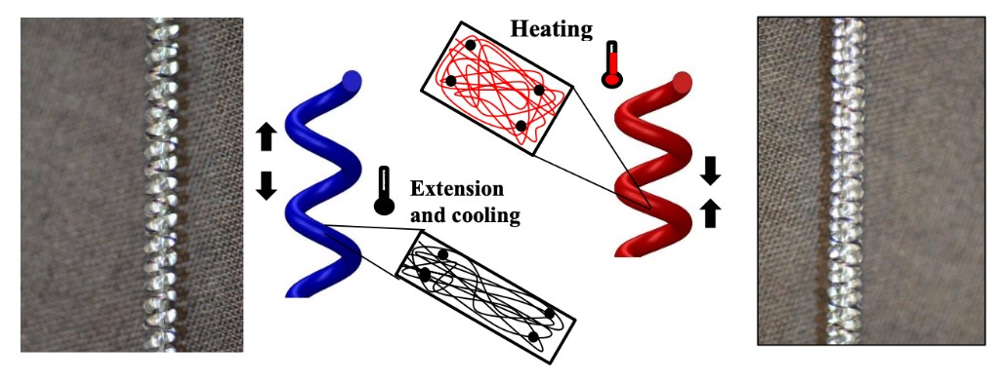
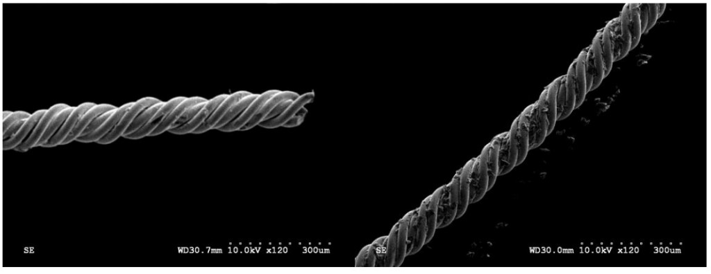
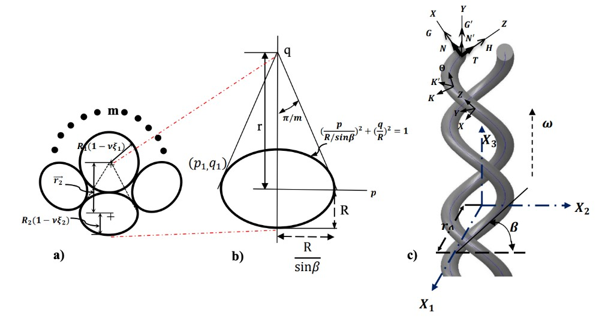

Projects
Research in artificial muscle, surgical robotics, haptic collaboration, voice UI, and privacy-preserving machine learning — from early concepts to published work.



Coiled Nylon Actuators & Artificial Muscle
M.Sc. research at UBC Molecular Mechatronics Lab on thermally driven shape memory alloy yarn and coiled nylon actuators — variable stiffness, pennate muscle configurations, operating temperature ranges, and cooling strategies for high-performance artificial muscle systems.
Publications & thesis
Laparoscopic Force Control Instruments
Early work on intelligent laparoscopic graspers and forceps with antagonistic shape memory alloy actuation — force-controlled surgical instruments for minimally invasive procedures.
Force Feedback for Grounding in Collaborative Learning
Studied how force feedback supports grounding in collaborative learning — how touch-based shared evidence helps learners build mutual understanding beyond visual displays and audio alone.
Study design: 24 first-year undergraduates (12 dyads) across three haptic learning environments — CELLO (pressure & fluid), HAPLY (collision & momentum), and MagicPen (electrostatics). ~2-hour sessions with pre/post tests, design challenges, and qualitative coding (MAXQDA; inter-coder reliability α = 0.802).
Design implications: shared exploration, sustaining mutual understanding, reaching consensus, and engagement & curiosity.
Publications
Accountability-Aware Voice User Interfaces
With Samsung Research Canada and Design for People (UBC), designed an accountability-aware VUI framework for home appliances — helping users who want simple, confident control without knowing what to do next or risking damage or unsafe situations.
Framework modes: full automation (routine tasks with permission), recommendation (contextual best options), instruction (step-by-step guidance), and command-based (quick voice execution).
Results: +30% hidden feature discovery, 20% user error reduction. Users perceive accountability differently based on automation level and task complexity.
Distributed Learning on Private Medical Data
Scalable, fault-tolerant platform for distributed machine learning on private medical imaging data — enabling collaborative model training without centralizing sensitive patient records.
Publications